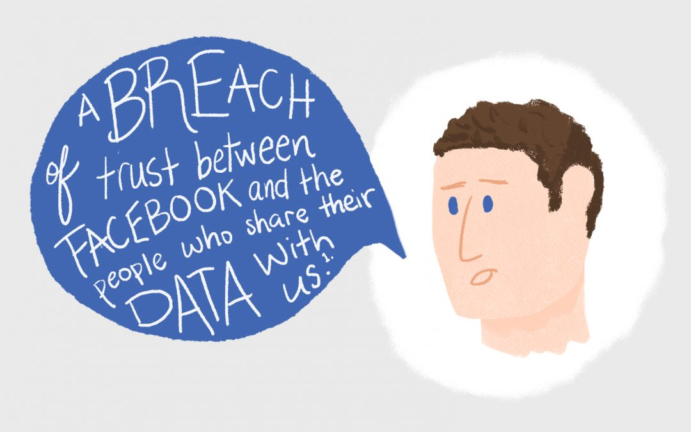

Social Media
Be confidential on Social Media -- today's need

Unless you are living in Forest of Amazon, you must have obviously heard of the name Cambridge-Analytica and felt the reactions arising from the Scandal which threatens to rock the Giant of Social Networking, Facebook.
As we grow advance in Technology, things are getting more and more complicated. A campaign to delete Facebook with the official hashtag “#DeleteFacebook” is only getting more popular.
What was Cambridge Analytica? It was an American data mining and communication firm, it was an offshoot of the British Strategic Communication Laboratories (SCL) and was founded in 2013 specifically with a focus on impacting election in the United States. Cambridge Analytica's Facebook game in politics was just the beginning, the enterprise was next - TechRepublic
The firm offers its services to political campaigns by analyzing data from multiple sources on electoral behavior. Cambridge Analytica is also reported to have played a part in Donald Trump’s successful election campaign in 2016 and for the “Leave” section in the Brexit vote in that same year.
What’s the connection with Facebook?
According to investigations made by the American and the British media, Cambridge Analytica stole personal information from 50 million Facebook user profiles. This was done by getting users to submit answers to a personality prediction application by a psychologist from the University of Cambridge Aleksandr Kogan. This application needed users to login using their Facebook account and gained access to their profiles, locations, likes and other personal data. It also gathered data on the friends of the users who downloaded the application.
Next time, when you see a form asking your opinion on certain topic with your login credentials, think once more, does your opinion really matters or is it just to steal your cred.
This data was then sent to Cambridge Analytics – which is a violation of Facebook’s terms of service – which created psycho graphic profiles on 30 million of these profiles, to influence voter behavior for its clients. This is how your data is being used without your concern and affects you indirectly.
As closing note, I would like to tell you, see no one in this world works for free. If Facebook, Instagram, google, snap-chat are providing you free services, then they are using your data as exchange of monetary subscription. Your data is very important, never make deal with its confidentially, otherwise this can damage your life in a way you can never recover. Be safe, Be happy. See you in next blog, till that have a good day and babye!!
© hackkeencyber